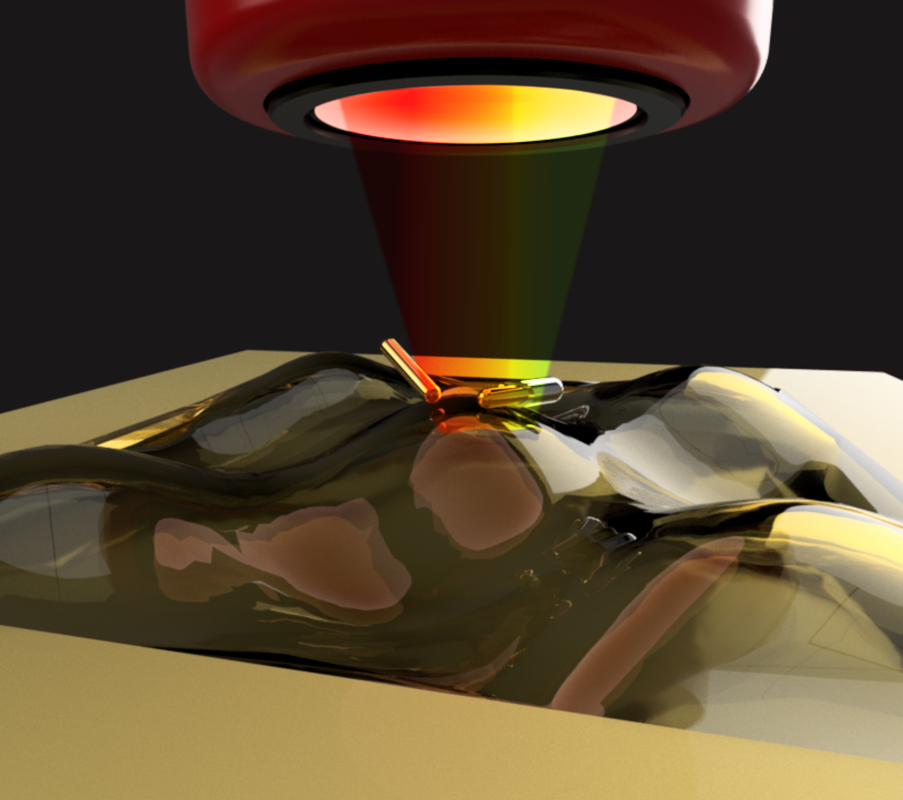
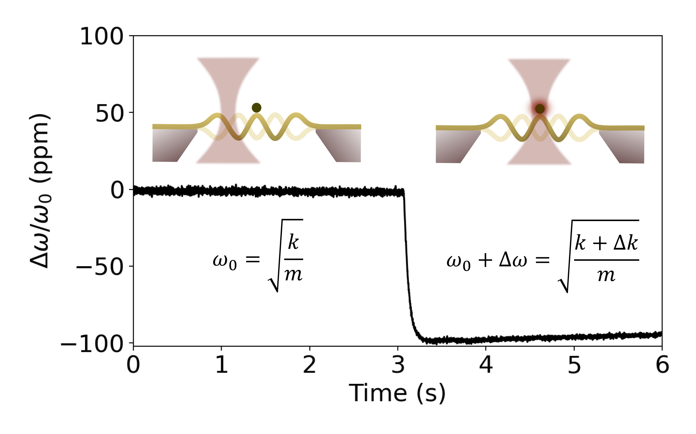
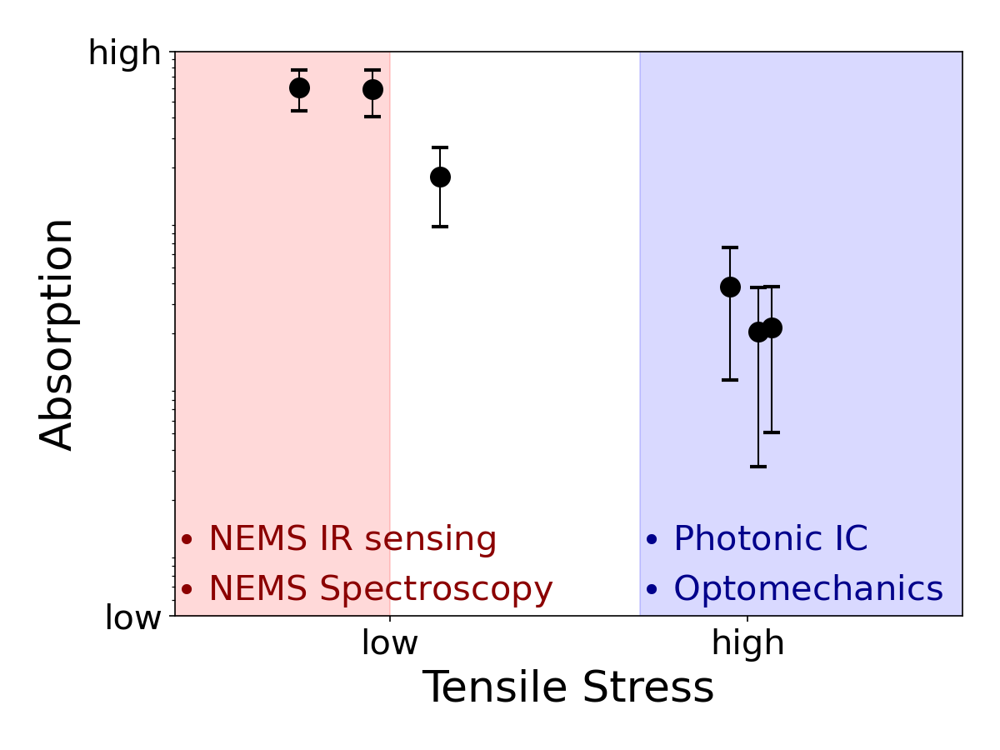

I am an experimental physicist and engineer, currently a PostDoc at TU Wien, in the Micro- and Nanosensor Group. My research focuses on nano-optomechanical sensors for next-generation single molecule spectromicroscopy and IR/THz detection.
Research Highlights
My research involves the design and experimental characterization of novel nano-optomechanical resonators that serve as sensing platforms for probing nanoparticles and biomolecules at the nanoscale, as well as for IR/THz light detection. My experimental toolset combines nanomechanics and optics, complemented by expertise in CAD-based device design.
My main contributions to the field of nanomechanical photothermal sensing include:
- Nanomechanical photothermal polarization-resolved spectroscopy, developing an alternative label-free, single-molecule platform for light-matter interaction analysis at the nanoscale. 
- Fundamentals in nanomechanical photothermal sensing, shedding light on the relationship between resonator's design and photothermal performance. 
- Nanomechanical photothermal optical characterization, showcasing the ability of this platform to analyze low-optical loss material for nanophotonics. 
- Development of a full polarization-resolved spectroscopy platform in ACS Photonics, allowing the characterization of the plasmonic properties of individual nanorods and their interaction with the resonator.
- Spectroscopy on 2D materials in 2D Materials.
- Analysis on the state-of-the-art nanomechanical resonators for spectroscopy and microscopy in The Journal of Physical Chemistry C.
- Comparative analysis among widely used nanomechanical resonators for photothermal sensing in Microsystems & Nanoengineering; impact of the photothermal back-action; theoretical framework for photothermal sensor design.
- Optimized signal estimation via Kalman filtering in nanomechanical photothermal sensing in IEEE Sensors Journal.
- Uncooled thermal IR detection near the fundamental thermal photon noise limit with a broadband absorber-integrated nanomechanical resonator in Communication Physics and 2023 IEEE Sensors.
- Experimental characterization of the extinction coefficient in LPCVD silicon nitride for different fabrication-related tensile stresses in Nano Letters
Contact
📧 kostas[dot]kanellopulos[at]tuwien[dot]ac[dot]at
📍Micro- and Nanosensors Group,
Institute of Sensor and Actuator Systems,
TU Wien, Gusshausstrasse 27-29, 1040 Vienna, Austria